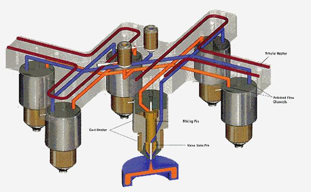
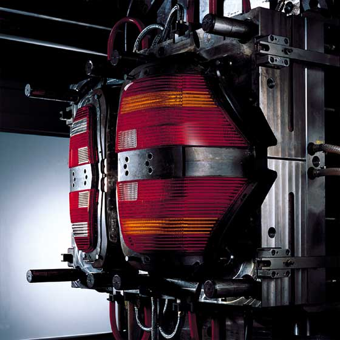
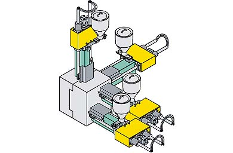
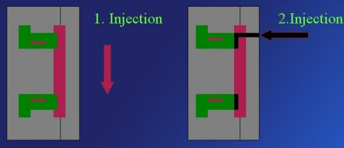
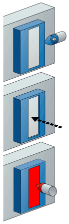
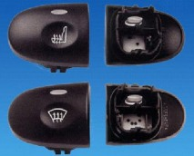
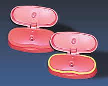
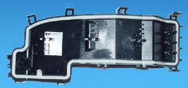
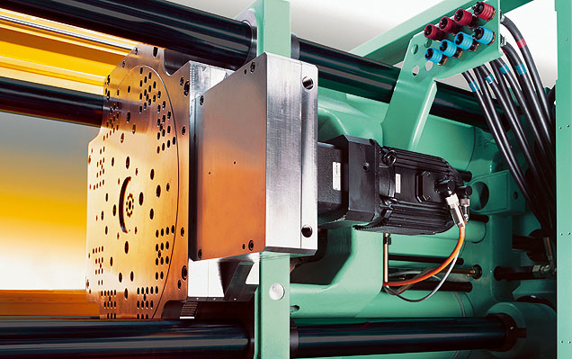

Hakan Þahin
Gazi Üniv. T.E.F., Kalýpçýlýk Öðretmenliði
Haziran 2008, Teknik Okullar, Ankara
Özet
Zaman ilerledikçe yoðun rekabet ortamý insanlarý üretimin maliyetini ve ayný zamanda da kaliteyi artýrma yollarýný bulmaya yöneltmiþtir. Parça tasarýmý yapýlýrken sadece kaliteye bakýlmaz olmuþ; parçanýn malzeme seçimi, kalýplanabilirliði, iþlenebilirliði, dayanýklýlýðýnýn yaný sýra artýk parçalarýn estetiðine de çok büyük önem verilmektedir.
Bu tez çalýþmasýnda ko-enjeksiyonla kalýplama nedir sorusuna net cevap bulacaðýnýzý umuyorum. Ko-enjeksiyon yöntemi plastik enjeksiyon kalýplarý mantýðýnda fakat iki ya da daha fazla renkli ya da farklý malzemelerin ayný kalýpta kalýplanma tekniðidir. Bilinen kalýp mantýðýyla bazý farklýlýklarý vardýr. En büyük farklýlýklar kalýptaki yolluk konumlarý ve makinelerdedir. Ko enjeksiyon kalýplarý parçanýn tasarýmýna göre Erkek çekirdek çekmeli yöntem (core-back process), döner tabla yöntemi (rotary table process), 180° indeks plaka yöntemi (index-plate process 180°), 120° indeks plaka yöntemi (index-plate process 120°), döner çekirdek yöntemi (rotary-cross process), düþey döndürme yöntemi (vertical-turn process), transfer tekniði (transfer technique), beraber enjeksiyon yöntemi ve çift enjeksiyon yöntemi olmak üzere 9 çeþit birden fazla renk ya da malzemeli ko-enjeksiyonla kalýplama yöntemi bulunmaktadýr. Maliyetlerinin yüksek oluþu, ülkemizde yaygýn kullanýlmayýþý gibi dezavantajlarý da olsa günümüzde pek çok parça üretimi bu yöntemlerle üretilmektedir.
1. Giriþ
Enjeksiyon ile üretim tekniði seri üretime uygunluðu ve ürün geometrisinde sýnýrlandýrmalarýn az olmasý dolayýsý ile en sýk kullanýlan plastik þekillendirme yöntemidir;
Geliþen teknoloji ile birlikte parçalarýn kalitesi ve kalitenin altýnda da estetik görünüþ dayanýklýlýk vb gibi özelliklerinin ön planda olmasý ko-enjeksiyon gibi yeni teknolojilerin ortaya çýkmasýnda büyük etkendirler.
Birçok ko-enjeksiyonla kalýplama teknolojileri plastik parçalarýn üretimi için mevcuttur. Günlük hayatýmýzda da kullandýðýmýz araba arka farlarý, diþ fýrçalarý, cep telefonu kapaklarý, kalem kapaklarý, contalar, 2 ya da daha fazla renk veya malzemeli bardaklar, düðmeler gibi parçalarýn üretiminde ko-enjeksiyon yöntemi kullanýlmaktadýr. Bu parçalar günlük hayatýmýzýn neredeyse vazgeçilmezleri olmuþlardýr.
2. Ko-enjeksiyon:
Birçok çeþit ko-enjeksiyonla kalýplama teknolojileri plastik parçalarýn üretimi için kullanýlmaktadýr. Bu teknolojiler çok geliþtirilmiþtir ve özellikle yapýlandýrýlmýþ ko-enjeksiyon makineleri gerekmektedir. Bu aþamalar bize birçok avantaj sunmasýna raðmen ko-enjeksiyon makinelerinin elde edilebilirliðinin kýsýtlý olmasýndan dolayý kullanýmlarý sýnýrlýdýr. Bütün ko-enjeksiyonla kalýplama aþamalarý her biri deðiþik malzeme ve renkleri plastikleþtiren ve enjekte eden iki ya da daha fazla enjekte vidasý ünitelerinden faydalanýr. Farklý ko-enjeksiyonla kalýplama aþamalarý tek vuruþlarýn nerde ve ne zaman enjekte edildiklerine göre sýnýflandýrýlýr (4).

Örneðin iki ya da daha fazla renkte ve vuruþta kalýplama bilgisayar anahtarlarý ve araba arka farlarý gibi parçalarýn yapýmýnda kullanýlan bir aþamadýr (4). Örnek parça þekil 1.'de gösterilmiþtir.

Diðer ko-enjeksiyonla kalýplama aþamasý sandviç kalýplama (sandwich moulding) olarak kategorize edilir. Bu tür ko-enjeksiyonla kalýplama aþamasý çok katlý (genellikle çift malzemeli) yapýnýn oluþtuðu ko-ekstrüzton aþamasýna benzer. Bu aþama ayrýca 2 farklý hýz kontrollü ve vida enjekte (iki enjekte vidalý) üniteli ko-enjeksiyon makinesi kullanýlýr. Bu enjeksiyon aþama evresinde montajlý iki ya da daha fazla enjektörle (nozzle, meme) kalýp boþluðu beslenerek kalýp boþluðu doldurulur. Bu enjektörle malzeme odasýndaki malzeme iç katmaný oluþmuþ ve malzemenin biraz soðumasýyla 2. vuruþla birlikte parçanýn diðer malzemesi ya da diðer renkle birlikte parça tamamen oluþmuþ olur (4).
Tipik ko-enjeksiyon aþamasý çift malzemeli ya da çift renkli parçanýn dýþ kýsmýndaki malzemenin ya da rengin enjekte edilmesiyle baþlar. Dýþ katmanýn dökülmeye baþlamasýndan kýsa bir süre sonra diðer malzeme ya da farklý renkteki malzeme dökülmeye baþlar. Bu eþ zamanlý bir enjeksiyon evresini baþlatýr. Dolum sýrasýndaki bazý esnalarda dýþ katmanýn dolumu tamamlanýr ve dolma evresi tamamlanana kadar iç kýsmý oluþturacak malzemenin dolmasý devam eder (4).
Birden fazla malzemeli parçalarda dýþtaki parçanýn iç yapýsý enjekte sistemi ve kalýp boþluðundaki akýþ laminer olduðu için dolum sýrasýnda korunur. Bu durum farklý parçalarýn karýþmasýný engeller ve de bir maddenin diðer bir maddeyle tahmin edilebilir ve tekrar edilebilir dýþ katmanla tam bir kombinasyonunu saðlar (4).
Ko-enjeksiyonla kalýplama kalýp donanýmýnda uzmanlaþýrken birçok görünüm, performans ve ekonomik avantaj saðlar. Bu aþamada kullanýlan dýþ katman malzemesi; renk, yüzey kalitesi, hasar dayanýklýlýðý, hava ve kimyasal dayanýklýlýðý, sürtünme özellikleri ve diðer yüzey niteliklerine göre seçilir. Ýç madde genellikle kimyasal köpüktür ya da katý, boyutsal olarak sabit, sert olarak desteklendirilmiþ madde olabilir. Kimyasal köpüðün iç kýsým olmasý durumlarýnda, ko-enjeksiyon aþamasý çok güzel bir estetiðe sahip köpük parçalý yapýsal bir tipin oluþmasýna neden olur. Daha ince katý iç kýsým maddeleri ve kalýplarý için birçok performans avantajý elde edilebilir. Yaygýn uygulamalar, sert, boyutsal olarak sabit yüksek yüzey kaliteli düzgün dýþ katman ve fiber destekli iç kýsýmlarla üretilmiþ ürünleri iletken metal destekli iç kýsým ve düzgün dýþ katman reçinesi kullanýlarak üretilmiþ, elektromanyetik katkýlý koruma etkili kalýplanmýþ yuvalarý ve iç katman için geri dönüþtürülmüþ veya özelleþtirilmiþ reçine kullanýlan yüksek yüzey kaliteli ürünleri içerir. Ýkinci uygulama iç kýsýn kalýplama hacminin %50 - 60'ýný oluþturduðu için daha çekicidir ve bu durum birçok uygulamada maliyet tasarrufunu saðlar. Birçok alet geometrisi ve materyallerin ko-enjeksiyon aþamasý için uygun olmasýna raðmen, kullanýlabilir materyal kullanýmlarýnda bazý eksiklikler vardýr. Ko-enjeksiyon aþamasý birçok yýldýr uygulanabilir olmasýna raðmen geniþ kullaným alanlarý yoktur, fakat þüphesiz ki bu aþamanýn çok yönlülüðü ve faydalarý daha geniþ kullanýmlar katký saðlayacaktýr (4).

Ko-enjeksiyon yöntemi plastik enjeksiyon kalýplarý mantýðýnda fakat iki ya da daha fazla renkli ya da farklý malzemelerin ayný kalýpta kalýplanma tekniðidir. Bilinen kalýp mantýðýyla bazý farklýlýklarý vardýr. En büyük farklýlýklar kalýptaki yolluk konumlarý ve makinelerdedir. Ko enjeksiyon kalýplarý parçanýn tasarýmýna göre: erkek çekirdek çekmeli yöntem (core-back process), döner tabla yöntemi (rotary table process), 180° indeks plaka yöntemi (index-plate process 180°), 120° indeks plaka yöntemi (index-plate process 120°), döner çekirdek yöntemi (rotary-cross process), düþey döndürme yöntemi (vertical-turn process), transfer tekniði (transfer technique), beraber enjeksiyon yöntemi ve çift enjeksiyon yöntemi olmak üzere 9 çeþit birden fazla renk ya da malzemeli ko-enjeksiyonla kalýplama yöntemi bulunmaktadýr.
Bu teknoloji 15 yýldan daha fazla süredir kullanýlmaktadýr. Uluslar arasý kimyasal endüstri topluluðu bu kalýplama aþamalarýnýn patentini elinde bulundurmaktadýr. Ko-enjeksiyon makinelerinin öncüleri ise Almanya'dan Schleoman ve Siemag ve Ýtalya'dan da Presma'dýr (5).
2.1. Erkek çekirdek çekmeli yöntem (core-back process)


Erkek çekirdek çekmeli yöntemde kalýplar bu yönteme göre tasarlanmaktadýrlar. Erkek tarafýnda geri çekilen maça, yöntemin ikinci aþamasýnda kalýp gözünde ikinci malzeme için yer açmýþ olmaktadýr (6).
Erkek çekirdek çekme yöntemiyle üretilen parçalar:
 

2.2. Döner tabla yöntemi (rotary table process)
Ko-enjeksiyonla kalýplama yönteminin bir farklý modeli olan döner tabla yönteminde kalýbýn komple hareketli tarafý döndürülmektedir. Kalýplanacak ürünün geometrisi sadece kalýbýn diþi tarafýndan deðiþtirilebilmektedir (6).

2.2.1. 180° indeks plaka yöntemi
Bu yöntem döner tabla yöntemi ile ayný yöntemdir fakat bu yöntem 180° döndürülmektedir. Parçanýn 180° döndürülmesi de parçanýn iki renkli olmasýný anlatmaktadýr (6).